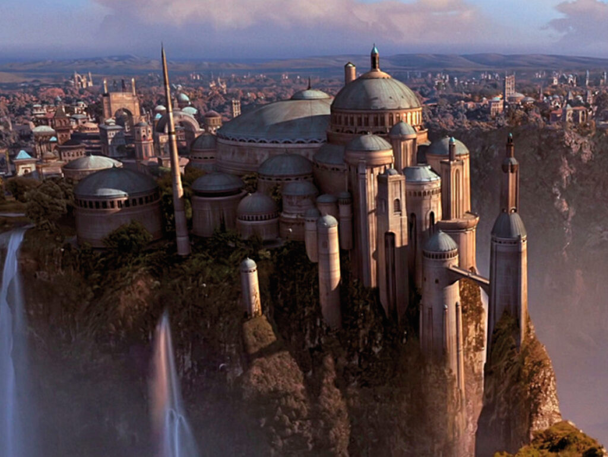
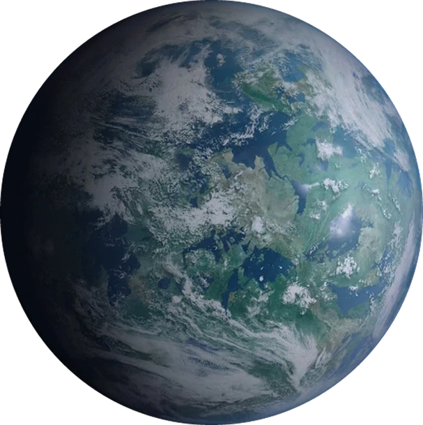
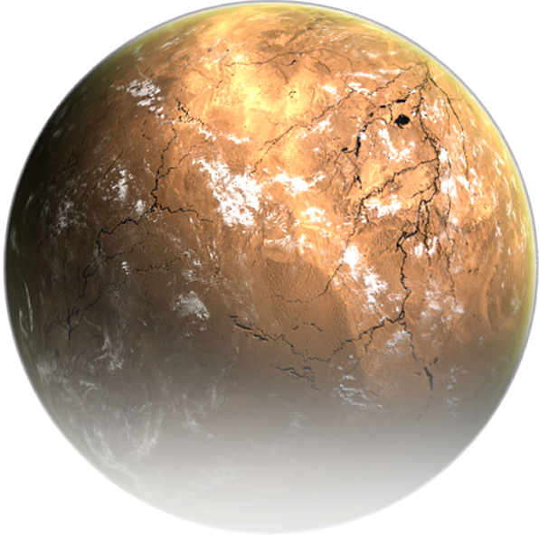
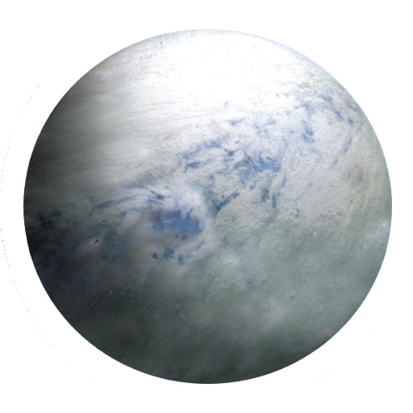
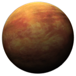

🌌 Bienvenid@ a Galactic Maps
Este sitio web es un proyecto universitario desarrollado con fines educativos.
Utiliza una API pública para obtener y mostrar información sobre el universo de Star Wars.
Su contenido se centra principalmente en los planetas que aparecen en las dos primeras trilogías de la saga:
- • La trilogía original (episodios IV, V y VI)
- • La trilogía de precuelas (episodios I, II y III)
1
La amenaza fantasma
2
La guerra de los clones
3
La venganza de los Sith
Trilogía de Anakin
A lo largo de la trilogía precuela de Star Wars, seguimos la transformación de Anakin Skywalker, desde un niño esclavo en Tatooine hasta convertirse en Darth Vader. En su viaje, visita diversos planetas clave como Tatooine, donde nace; Naboo, donde conoce a Padmé; Coruscant, el centro político de la República; Kamino, donde se crean los clones. Cada planeta refleja una etapa crucial en su destino, marcando momentos decisivos tanto para él como para la galaxia.

Naboo
Coruscant

Alderaan
Kamino
Planetas trilogia Anakin
Naboo

Coruscant

Alderaan
Kamino
8
9
0
Trilogía de Luke
En la trilogía original de Star Wars, acompañamos a Luke Skywalker en su camino de granjero a héroe galáctico. Su historia comienza en Tatooine, donde descubre su destino; pasa por Dagobah, donde entrena con el maestro Yoda; Hoth, base rebelde en la que lucha contra el Imperio; Endor, donde se libra la batalla final; y Bespin (Ciudad Nube), donde enfrenta por primera vez a Darth Vader. Cada planeta representa una etapa en su formación como Jedi, mientras lucha por devolver el equilibrio a la Fuerza y redimir a su padre.
Planetas trilogía Luke

Tatooine

Endor

Hoth
Dagobah

Bespin